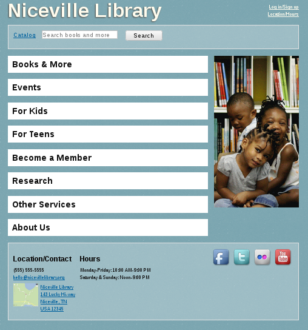

DIALLED
Distributed Index of Allsome Library Location and Event Data
The 1-minute version
- There is linked data!
- Current data dump in Turtle format is at https://dialled.ca
- There is not a huge amount of data
- There is still a lot of work to do
- Budget = my time + $0
- Please help (both lightweight and heavyweight participation is encouraged!)
Inspired by CWRC


Library linked data principles
- Every bibliographically described resource, its instances
- Every instance, its offering library
- Every library, its URL!
- ... with hours, location, contact data so people can get to your stuff
I started at the bottom
- Our MARC records now link to OCLC Work URIs and LoC IDs
- Evergreen expresses these using schema.org in RDFa
- OCLS is similarly enriching their MARC records
- Zepheira offers a MARC->BIBFRAME->HTML + schema.org service
WorldCat Registry
authoritative single source for institutional metadata
- Problematic non-commercial license
- Mostly missing or out-of-date data
Library and Archives Canada
Germans rock linked open data
- beta.lobid.org offers a web API for a comprehensive dataset of library institutions in Germany
- Major hat tip to Adrian Pohl!
GET http://beta.lobid.org/organisations/DE-6
{
"isil" : "DE-6",
"wikipedia" : "http://de.wikipedia.org/wiki/Universitäts-_und_Landesbibliothek_Münster",
"@context" : "http://beta.lobid.org/organisations/context.jsonld",
"linkedTo" : "http://lobid.org/organisation/DE-605",
"@type" : "http://schema.org/Library",
"rs" : "055150000000",
"name" : "Universitäts- und Landesbibliothek Münster",
"url" : "http://www.uni-muenster.de/ULB/",
"provides" : "http://www.uni-muenster.de/ULB/katalog/",
"@id" : "http://beta.lobid.org/organisations/DE-6#!",
"telephone" : "0049 251 83-24040",
"email" : "mailto:info.ulb@uni-muenster.de",
"address" : {
"postOfficeBoxNumber" : "80 29",
"addressLocality" : "Münster",
"@type" : "http://schema.org/PostalAddress",
"addressCountry" : "Germany",
"postalCode" : "48043"
},
"location" : [ {
"type" : "http://schema.org/Place",
"address" : {
"postalCode" : "48143",
"streetAddress" : "Krummer Timpen 3",
"addressLocality" : "Münster",
"addressCountry" : "Germany",
"@type" : "http://schema.org/PostalAddress"
},
"openingHoursSpecification" : {
"@type" : "http://schema.org/OpeningHoursSpecification",
"description" : "Mo-Fr 8.00-22.00, Sa-So 10.00-20.00"
},
"geo" : {
"lat" : "51.96286",
"lon" : "7.62076"
}
} ]
}
So, about that CWRC work...

CWRC's dataset
{
"community": "Sudbury",
"group": "Libraries",
"institutionType": "Library",
"label": "Laurentian University",
"latLng": "46.5011111,-80.9775",
"latitude": "46.5011111",
"libraryType": "Academic",
"longitude": "-80.9775",
"population": null,
"provCode": "ON",
"province": "Ontario",
"sort": "707",
"startDate": "1960",
"subGroup": "Academic libraries",
"url": "http://library.laurentian.ca/content/library"
}Step 1. Crawl the URLs
- 4,798 entries in the CWRC dataset
- 4,250 with URLs
- 3,223 unique URLs
- 561 URLs redirected
- 3,141 URLs retrieved
Step 2. Update the CWRC dataset
{
"...": "...",
"url": "http://laurentian.ca/library",
"urlPrevious": "http://library.laurentian.ca/content/library"
}Step 3. Extract structured (or linked) data
- Microdata (
itemscope, itemtype, itemprop): 191 pages - RDFa (
vocab, typeof, property): 197 pages - JSON-LD (
<script type="application/ld+json">) : 112 pages
Encouraging!
Step 4. Evaluate the extracted data
Some of it is weaksauce...

Step 4. Evaluate the extracted data
Some of it rocks!
Step 5. Publish the linked open data
<http://biblio.uottawa.ca/en/morisset-library> md:item ( [ a schema:Library ;
schema:branchOf [ a schema:Library ;
schema:address [ a schema:PostalAddress ;
schema:addressCountry "Canada"@en ;
schema:addressLocality "Ottawa"@en ;
schema:addressRegion "ON"@en ;
schema:postalCode "K1N 6N5"@en ;
schema:streetAddress "65 University Private"@en ] ;
schema:alternateName "Bibliothèque Morisset"@en ;
schema:geo [ a schema:GeoCoordinates ;
schema:latitude "45.423241"@en ;
schema:longitude "-75.684126"@en ] ;
schema:name "Morisset Library"@en ;
schema:url <https://biblio.uottawa.ca/en/morisset-library> ] ;
schema:name "uOttawa Library"@en ] ) ;
rdfa:usesVocabulary schema: .The picture in Canada
- schema.org/Library Usage: 3 libraries--one of which is an archives
- schema.org/LocalBusiness Usage: 47 statements
- schema.org/Organization : Usage: 15 statements
- schema.org/Event : Usage: 44 statements
- schema.org/PostalAddress : Usage: 103 statements
This should be in our wheelhouse!
Why should you care--really?
- Visibility and accuracy in common search engines
- Ease of building lightweight applications
- General linked open data use cases
What can you do?
- Add linked data to your library home page
- Help manage the list of libraries
- Help build dialled.ca
Adding linked data
Scott, D. (2015). White Hat Search Engine Optimization (SEO): Structured Web Data for Libraries. Partnership: The Canadian Journal of Library and Information Practice and Research, 10(1). Retrieved from https://journal.lib.uoguelph.ca/index.php/perj/article/view/3328
Web page before linked data
Web page after linked data
Education by demonstration!
- An augmented Library One-Pager
- Live at dialled.ca/one_pager
- git branch at github.com/dbs/One-Pager/tree/schema.org
Standard RDFa tactics
@@ -14,14 +14,14 @@
<link rel="stylesheet" href="deps/ie.css">
<script src="//html5shiv.googlecode.com/svn/trunk/html5.js"></script>
<![endif]-->
-</head><body><div class="page">
+</head><body vocab="http://schema.org/" typeof="Library"><div class="page">
<header>
<nav>
<a href="#">Log in/Sign up</a>
<a href="#footer">Location/Hours</a>
</nav>
- <h1><a href="#">Niceville Library</a></h1>
+ <h1 property="name"><a href="#">Niceville Library</a></h1>
<form id="search"><fieldset><legend>Search Catalog</legend>
<label for="searchText"><a href="#">Catalog</a></label><input id="searchText" placeholder="Search books and more" type="search">
<input type="submit" value="Search">
Reality check
- How many of you use a static HTML library web site?
- How many use a CMS like Drupal?
- How many of you want a deep knowledge of RDFa, microdata, or JSON-LD and HTML to be the minimum bar for someone to change the opening hours on your website?
Drupal One-Pager
- A theme with user-friendly widgets that hide any implementation details.
- So easy, a University Librarian could use it!™
Location and contact info
This really isn't hard!
- NO WEBSITE REDESIGN NECESSARY
- Nobody needs to know except you and the world of linked open data
How to help dialled.ca directly
- Ensure your own library is listed, with an accurate URL: see https://goo.gl/ZpsB8M
- Create and maintain machine-readable lists
- Write HTML scrapers for existing human-oriented lists
The future of dialled.ca
- Generate periodic data dumps and statistics of the crawled data
- Normalize the data across different vocabularies
- Add more data from more sources (ILL symbols, etc)
- Integrate checks and updates via external lists
- Offer a dynamic web interface for querying the existing data
- Enhance the dialled.ca user experience
- Contributions welcome at https://github.com/dbs/dialled-crawler